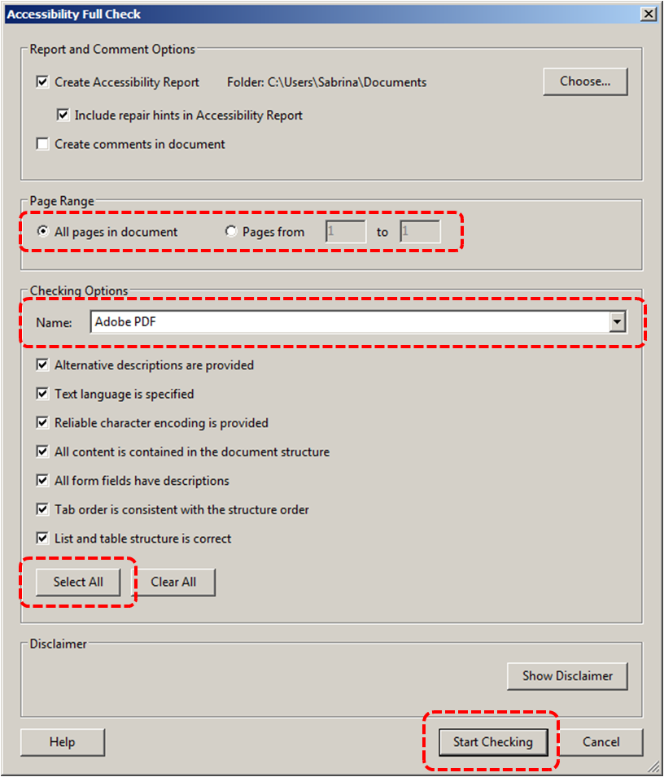
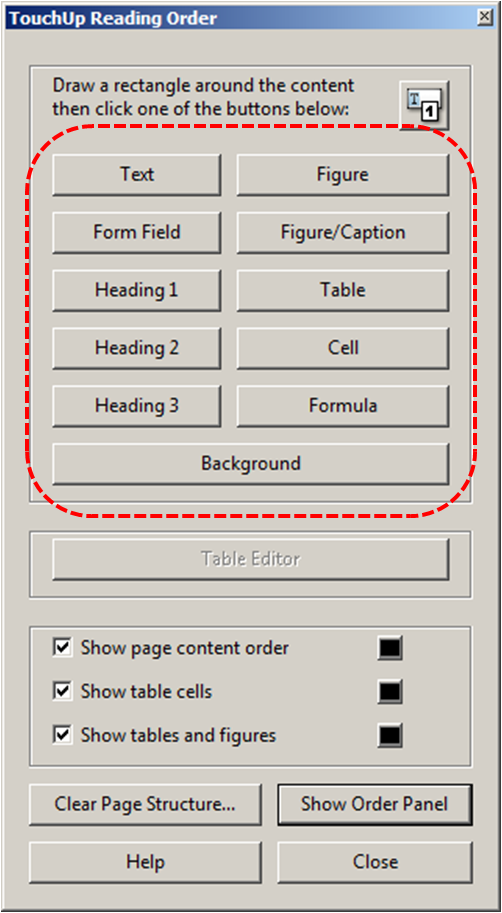
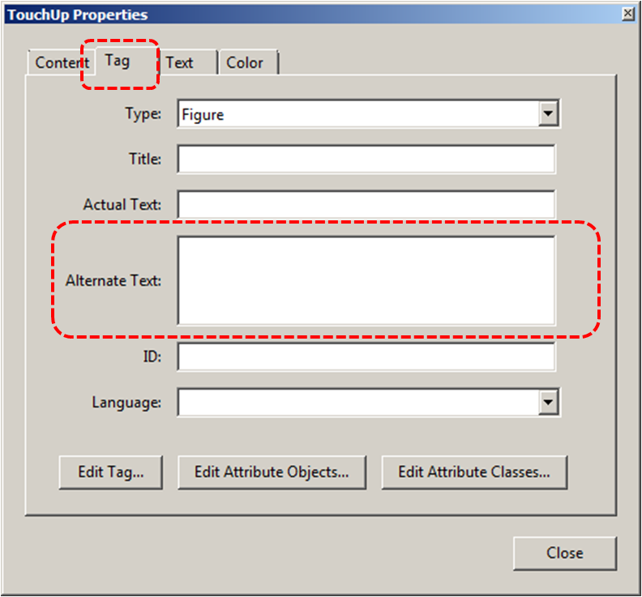
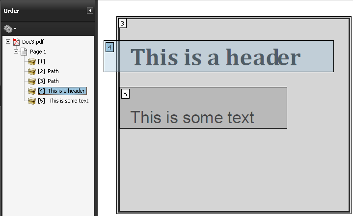
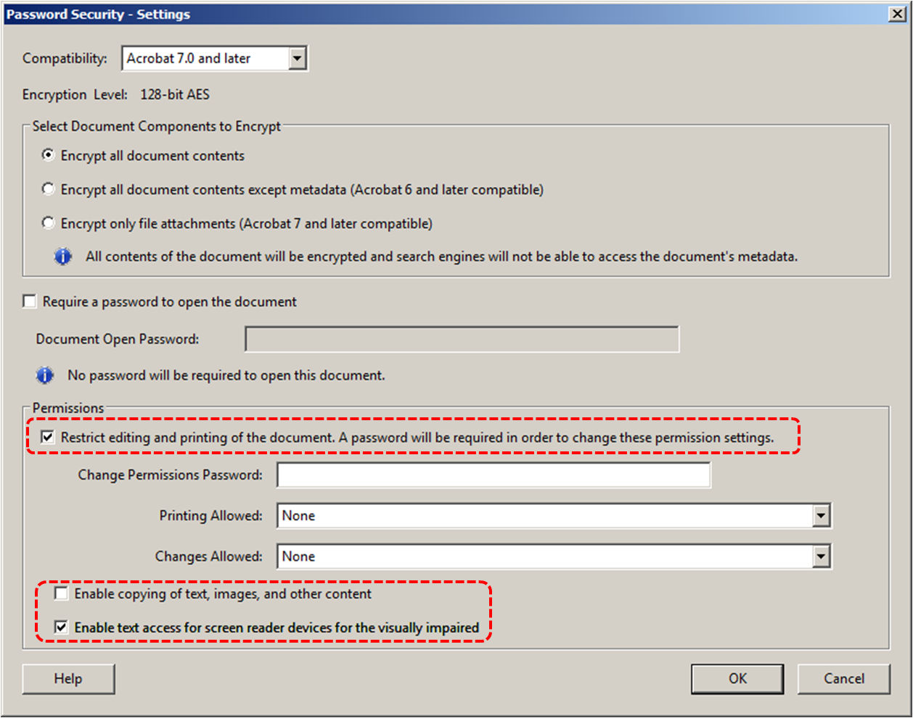

Authoring Techniques for Accessible Office Documents: Adobe Acrobat 9 Pro
Quick Reference
- Usage Notes
- Technique 1. Use Accessible Source Documents
- Technique 2. Test for Accessibility Compliance
- Technique 3. Add and Edit Tags
- Technique 4. Provide Alternative Text
- Technique 5. Set a Logical Reading Order
- Technique 6. Set Document Properties
- Technique 7. Adjust Security Settings
- Technique 8. Set Bookmarks
- Accessibility Help
- Accessibility Support Tools
- References and Resources
- Acknowledgments
Usage Notes
At the time of testing (January 19, 2011), Acrobat 9 Pro (Windows) enables the production of accessible digital office documents. Acrobat 9 Pro includes an accessibility checking feature.
Note: While PDF accessibility has improved over the years, accessibility support for PDF by authoring tools, viewers and assistive technologies (e.g. screen readers) is not as widespread as for HTML documents. We recommend considering HTML instead of or in addition to PDF where appropriate.
Should I use ADOD or WCAG 2.0?
These techniques can help you to use Acrobat 9 Pro to create documents that are:
- Intended to be used by people (i.e. not computer code),
- Text-based (i.e. not simply images, although they may contain images),
- Fully printable (i.e. where dynamic features are limited to automatic page numbering, table of contents, etc. and do not include audio, video, or embedded interactivity),
- Self-contained (i.e. without hyperlinks to other documents, unlike web content), and
- Typical of office-style workflows (Reports, letters, memos, budgets, presentations, etc.).
Note: If you are creating forms, web pages, applications, or other dynamic and/or interactive content, these you should also consult the W3C-WAI Web Content Accessibility Guidelines (WCAG 2.0). The WCAG working group has provided PDF Techniques for WCAG 2.0.
File Formats
The default file format for Acrobat 9 Pro is Adobe Portable Document Format (PDF). Several other word processor and web format saving options are also offered, but these have not been checked for accessibility.
Document Conventions
We have tried to write these techniques so that they are useful to all authors, regardless of whether they use a mouse. However, for clarity there are several instances where mouse-only language is used. Below are the mouse-only terms and their keyboard alternatives:
- *Right-click: To right-click with the keyboard, select the object using the Shift+Arrow keys and then press either (1) the “Right-Click” key (some keyboard have this to the right of the spacebar) or (2) Shift+F10.
- *Drag: Unfortunately, there is no keyboard alternative for several operations that require dragging.
Disclaimer and Testing Details:
- Following these techniques will increase the accessibility of your documents, but it does not guarantee accessibility to any specific disability groups. In cases where more certainty is required, it is recommended that you test the office documents with end users with disabilities, including screen reader users.
- The application-specific steps and screenshots in this document were created using Adobe Acrobat 9 Pro (ver.9.0.0, Windows 7, Jan. 2011) while creating a PDF document.
- Tasks completed in Technique 3, Technique 4, and Technique 5 cannot be undone. It is recommended that you save your PDF document before and after you make significant changes.
- This document is provided for information purposes only and is neither a recommendation nor a guarantee of results.
- If errors are found, please report them to: adod-comments@idrc.ocad.ca
Technique 1. Use Accessible Source Documents
In the Adobe Acrobat 9 Pro workflow, all PDF documents start with a source document created in an office document authoring application, such as Microsoft Word or OpenOffice.org Writer. Because source documents provide the starting-point for the PDF documents, accessibility is very important.
To create an accessible source document
- Create a new document in the authoring application (from the default blank template or from one of the prepackaged templates)
- Ensure that you follow the ADOD Authoring Techniques provided for the authoring application (available at: http://inclusivedesign.ca/accessible-office-documents)
- When you are finished, you should also check the accessibility of the document (see “Accessibility Checking” in the Authoring Techniques for the authoring application)
Once you have completed the above steps, you are ready to convert your document to PDF using Adobe Acrobat 9.
To convert single source documents to PDF
- Go to the menu item: File > Create PDF > From file...
- Locate and select your source document and select the Open button, Acrobat will then proceed to convert the file.
Note: A batch conversion process is also available from the menu item: File > Create PDF > Batch Create Multiple Files
Scanned Content
If you created a PDF from a scanned document, then it will be inherently inaccessible to screen readers and other assistive technologies.The document will be less useful because graphic representations of text cannot be selected, edited or searched.
In this case, it is necessary that you convert the scanned images of text to searchable content using Acrobat's optical character recognition (OCR) feature before addressing the accessibility features of the document.
Technique 2. Check Accessibility
The most basic requirement for a PDF document to be accessible is for it to be "tagged" with hidden labels ("tags") that describes the structure of the document (e.g. that text should be interpreted as a header, paragraph, table cell, etc.). Screen readers can then use these tags to convey the document's information effectively to people with visual disabilities.
The other requirements for a PDF document to be accessible (e.g. alternate text, logical reading order, etc.) can only all apply once the document is tagged.
Caution!: The "Quick Check" feature is not recommended because it misses some important accessibility issues. Always perform a "Full Check" instead.
To perform a "Full Check"
- Go to menu item: Advanced > Accessibility > Full check
- Under Report and Comment Options, select how you would like to view the results
- If you would like to do a full check on individual sections of a document, under Page Range, select a page range (when you have a large document, running a full check on one section at a time can be more efficient.)
- Under Checking Options, select an accessibility standard from the Name drop-down list
- Under Checking Options, select Select All to run a complete accessibility check
- Select Start Checking

Technique 3. Add and Edit Tags
Caution!: Actions taken using the TouchUp Reading Order tool and Order Panel cannot be undone. Remember to save your work frequently. If you frequently create PDF files you might consider using one of these accessible PDF support tools.
If tags are missing, then they must be added. When tags are present, they should still be checked for correctness. Acrobat's Help text describes the tags as follows:
- Text
- Tags the selection as text.
- Figure
- Tags the selection as a figure. Text contained within a figure tag is defined as part of the image and is not read by screen readers, though alternate text defined for the figure is read out. Note: An effective way of handling very complex tex constructs (e.g. flow charts) is to group it all as a figure and provide alt text.
- Form Field
- Tags the selection as a form field.
- Figure/Caption
- Tags a selected figure and caption as a single tag. Any text contained in the tag is defined as a caption. Useful for tagging photos and captions and preventing caption text from being incorrectly added to adjacent text blocks. Note: Unless the caption actually describes the image, the figures will still require alternate text.
- Heading 1, Heading 2, Heading 3
- Tags the selection as a first, second, third, fourth, fifth, or sixth level heading tag. You can convert heading tags to bookmarks to help users navigate the document.
- Table
- Tags the selection as a table. When this selection is made, Acrobat analyzes the selection to determine the location of headings, columns, and rows. Note: Table editing can be especially challenging. Try to keep them as simple as possible in the source document.
- Cell
- Tags the selection as a table or header cell. Use this option to merge cells that are incorrectly split. Note: Table editing can be especially challenging. Try to keep them as simple as possible in the source document.
- Formula
- Tags the selection as a formula. Note: Because speech software may handle formula tags differently from normal text, you should still add alternate text.
- Background
- Tags the selection as a background element, or artifact, removing the item from the tag tree so that it does not appear in the reflowed document and is not read by screen readers.
To add tags automatically
Note: The automatic tagging feature may work for simple layouts, but it sometimes misinterprets the structure and reading order of complex page elements (e.g. closely spaced columns, irregular text alignment, and tables without borders). Therefore, you should still manually check the tags as explained below.
- Go to menu item: Advanced > Accessibility > Add Tags To Document
Note: This command removes any tags that were in the document before the command was run. If any potential problems were encountered, an Add Tags Report appears in the navigation pane.
To add/edit tags manually
- Go to menu item: Advanced > Accessibility > TouchUp Reading Order…
In most cases, it will help to have the three checkboxes checked (Show page content order, Show table cells, Show tables and figures) - Using the TouchUp Reading Order tool, drag* within the document pane to select a region of the page that contains one type of content (e.g. a text block)
- To add more page content to the current selection, Shift + drag*
- To remove page content from the current selection, Ctrl + drag*
- Select the appropriate button in the TouchUp Reading Order dialog to specify the tag type, a box should now encapsulate the element (the tags are explained above)

Tips for Tagging:
- A good place to start is tagging "Background" content, since this will reduce the number of tags to deal with. Background content should include:
- empty boxes,
- visible or invisible textbox borders (especially in busy areas where they overlap with text),
- visuals that are decorative or redundant (e.g. backgrounds, illustrations), whose content is described adequately in the text .
- If you are having difficulty tagging complex content (e.g. a complex table), consider either:
- Editing the source document to simplify it, or
- Selecting the complex content and tagging it as a figure for which you must then add alternative text that properly conveys all of the information in the new figure
To change the tag for a region
- With the TouchUp Reading Order tool...
- In the document pane, drag* to select a highlight region or select the number of the highlighted region (or select from the Order Panel)
Note: If you drag* over part of an already tagged element, the element is sometimes split up. This is helpful when splitting larger elements to ensure correct reading over of sub-elements. - Select the appropriate button in the TouchUp Reading Order dialog to specify the tag (the tags are explained here)
Technique 4. Provide Alternative Text
When using images, it is important to ensure that the information you intend to convey by the image is also conveyed to people who cannot see the image. This can be accomplished by adding concise alternative text to each image. If the image is purely decorative, mark it as background.
Tips for writing alternative text
- Try to answer the question "what information is the image conveying?"
- If the image does not convey any useful information, leave the alternative text blank (e.g. Background images should generally have no alt text, other decorative images should only have alt text if they form a crucial part of the content, message, and purpose of the document)
- If the image contains meaningful text, ensure all of the text is replicated
- For logos, the alternative text should be the organization name
- For groups of logos, one logo can be chosen to represent the group
- Sometimes text is included as part of a logo or footer image (e.g. the image might contain a phone number), this text should be set as the alternative text of the image
- Alternative text should be fairly short, usually a sentence or less and rarely more than two sentences
- If more description is required (e.g. for a chart or graph), provide a short description in the alternative text (e.g. a summary of the trend) and more detail in the long description, see below
- Test by having others review the document with the images replaced by the alternative text
Tips for writing longer descriptions
- Long descriptions should be used when text alternatives (see above) are insufficient to answer the question "what information is the image conveying?"
- In some situations, the information being conveyed will be how an image looks (e.g. an artwork, architectural detail, etc.). In these cases, try to describe the image without making too many of your own assumptions.
- One approach is to imagine you are describing the image to a person over the phone
- Ensure that you still provide concise alternative text to help readers decide if they are interested in the longer description.
- Alternatively, you can include the same information conveyed by the image within the body of the document, providing the images as an alternate to the text. In that case, the images should be marked as background and you do not have to provide alternate text within the image.
To add alternative text using the Navigation Panel
- Go to menu item: View > Navigation Panels > Tags
- In the Tags tab, select the element
- Right-click* the element and select Properties…
- In the Tag tab, fill in the alternative text in the Alternative Text box
 - Select Close
Tip: If you have a number of images arranged together, pick the main image and assign alternative text to it that describes the whole. Then, mark the secondary images as Background to be ignored (i.e. untag them)
To add alternative text directly to the element
- Right-click* the element and select Edit Alternate Text…
- Enter the alternative text in the Alternate Text box
- Select OK
To add alternative text to links
- In the tag tree, select the Link tag for the link
- Select Options > Properties
- In the TouchUp Properties dialog, select the Tag tab
- Type alternative text for the link
- Select Close
Correcting visual side-effects of tagging
Sometimes tagging can result in unexpected visual side effects, such as text disappearing behind background images. The following steps can be taken to correct such side-effects:
- Open Content panel (this is another option in the same location as the Order panel)
- Move any <Artifact> elements to the top (this places them behind all other elements).
- See if this fixes the problem. If not, continue:
- Click Gears icon > Highlight Content
- Drag* mouse over unwanted element or the area where missing element should be
- Click Gears icon > "Find content from selection" to locate selection in Content tree
- In the Content panel tree, click on the "Container" node of the selected element and then adjacent nodes.
- As you click, note which element is highlighted on screen. When you have found the element you want to correct, continue:
- If you found text that is hidden behind another element, move the hidden element DOWN within the Content panel tree (this moves it above other elements).
- If you found an element that should not be there, move it UP within the Content panel tree (this moves in behind other elements) or delete it if necessary (remember to Save beforehand)
Note: The order of items in the Content panel tree indicates their layer order in the document. If item A is lower in the tree than item B, then if item A and B overlap in the document, A will be in front. Some people find this confusing, so a good way to remember how this works is to imagine putting documents in a pile and noting their names in a list. The last document placed will be on top of the pile, covering the others, and its name will be on the bottom of the list.
Technique 5. Set a Logical Reading Order
The order in which elements in a document are read by assistive software is determined by the reading order. Each section of page content appears as a separate highlighted region and is numbered according to its placement in the reading order. You can change the reading order of the highlighted regions without changing the actual appearance of the PDF. For example, by reordering highlighted regions on the page, you can make a figure and caption read at the specific point that they are referenced in the text without actually moving the elements on the page.
To correct the reading order:
- Go to menu item: Advanced > Accessibility > TouchUp Reading Order…
- Select Show Order Panel
- In the Order tab, navigate through the list of highlighted regions that appear in the document pane
 - If a highlighted region is misplaced, right-click* and select Cut
- Navigate to the location where the region should be placed, right-click* the item above the location in the list and select Paste. After you drag* an item to a new location, the highlighted regions are renumbered accordingly.
Note: You can also complete steps 4 and 5 by dragging* the tag for the region to the location you want. As well, you can select and move multiple adjacent regions at once.
To test the reading order
Sometimes it may not be clear by looking at content, what would be the most logical aural reading order. In these cases, it is recommended to preview the reading order.
Caution!: The "Read Out Loud" feature is not recommended for checking the aural order because it will provide an inaccurate .
One method for testing the reading order of your document is called "reflowing", which temporarily presents it as a single column that is the width of the document pane. Only readable text appears in the reflow view.
If the tagged PDF does not reflow the way you want, it means that the content order or reading order of the PDF contains inconsistencies. If this is the case, in addition to correcting the reading order, it may also be helpful to edit the document tags.
- Go to menu item: View > Zoom > Reflow
- To return to regular view, go to menu item: View > Zoom > Reflow
Another way to test the aural accessibility of a document is to attempt to access the document with the screen readers that your readers will use (e.g. NVDA or JAWS on Windows, VoiceOver on Mac OS).
Technique 6. Set Document Properties
6.1 Document Language
It is important to set up the PDF correctly in order for assistive technologies (e.g. screen readers) to be able to present your document accurately.
To change the default language
- Go to menu item: File > Properties
- Select the Advanced tab
- In the Reading Options section, select the language from the Language drop-down list
- Select OK
To apply a language directly to selected element
- Go to menu item: View > Navigation Panels > Tags
- In the Tags tab, select the element
- Right-click* the element and select Properties…
- In the Tag tab, select the language from the Language drop-down list
- Select Close
6.2 Document Title
In case the document is ever converted into HTML, it should be given a descriptive and meaningful title.
To change the title of the current document
- Go to menu item: File > Properties
- Select the Description tab
- Enter a descriptive title in the Title box. It is also helpful to enter descriptive information in the text boxes that follow (Author, Subject, Keywords or select Additional Metadata)
- Select OK
Technique 7. Adjust Security Settings
It is possible to specify that no part of an accessible PDF is to be copied, printed, extracted, commented on, or edited. This can be accomplished by encrypting the document with password security. However, this could interfere with a screen reader’s ability to read the document, because screen readers must be able to copy or extract the document’s text in order to convert it to speech. In Acrobat 9 Pro, it is possible to maintain high-encryption-level security while at the same time providing the necessary access to assistive technologies.
To allow assistive technologies access to content
- Go to menu item: Advanced > Security > Show Security Properties
- Set the Security Method field to "No Security" or enable "Content Copying for Accessibility" in the Document Restrictions
- Go to menu item: Advanced > Security > Encrypt with Password
- In the Password Security - Settings dialog, under Permissions, select Restrict editing and printing of the document
- For low-encryption-level security, select Enable copying of text, images, and other content
- For high-encryption-level security, select Enable text access for screen reader devices for the visually impaired (this overrides the document’s security settings only for the purpose of giving assistive software, such as screen readers, access to the content)
- Select OK

Technique 8. Set Bookmarks
A bookmark is a type of link with representative text in the Bookmarks panel in the navigation pane. Each bookmark goes to a different view or page in the document. In Acrobat 9 Pro, you can use bookmarks to mark a place in the PDF to which you want to return, or to jump to a destination in the PDF, another document, or a web page.
Note: An Acrobat user can only add bookmarks to a document only if the security settings allow it.
To create a bookmark
- Select text to bookmark
- Type Ctrl+B
- Type a name the bookmark (or leave the default text)
- To create a bookmark without keyboard shortcuts
To delete a bookmark
- In the Bookmarks pane, *right-click on the bookmark
- Select Delete
To create a bookmark hierarchy
- In the Bookmarks pane, *right-click on the bookmark to move
- Select Cut
- *right-click on the new bookmark you would like the moved bookmark to appear under
- Select Paste Under Selected Bookmark
Accessibility Support Tools
- axesPDF: A plug-in for Microsoft Word 2007/2010 that makes it easier to create accessible PDFs (free public beta program);
- CommonLook Office: A plug-in for Microsoft Word 2007/2010 and PowerPoint 22007/010 that makes it easier to create accessible PDFs.
- CommonLook PDF: A plug-in for Adobe Acrobat that helps identify, report and correct accessibility problems.
- MadeToTag: A plug-in for for Adobe InDesign that makes it easier to create accessible PDF from InDesign documents.
- PDFGoHTML: A free Adobe Acrobat plug-in that converts tagged PDF into HTML, which can be useful in debugging tagging structures.
References and Resources
- Adobe Acrobat 9 Pro Pro Accessbility Guide
- PDF Techniques for WCAG 2.0
- WebAIM PDF Accessibility: Acrobat 7-9 and Accessibility
- GAWDS Writing Better Alt Text
Acknowledgments
Authors: Jan Richards, Sabrina Ruplall
This document was produced as part of the Accessible Digital Office Document (ADOD) Project (http://inclusivedesign.ca/accessible-office-documents). This project has been developed by the Inclusive Design Research Centre, OCAD University as part of an EnAbling Change Partnership project with the Government of Ontario and UNESCO (United Nations Educational, Scientific and Cultural Organization).

Substantial contributions have also been made to the project by AnySurfer, the City of Toronto, and OCAD University.


Authoring Techniques for Accessible Documents: Acrobat Pro 9 is licensed under a Creative Commons Attribution-ShareAlike 3.0 Unported License.
Updated: 18 July 2014